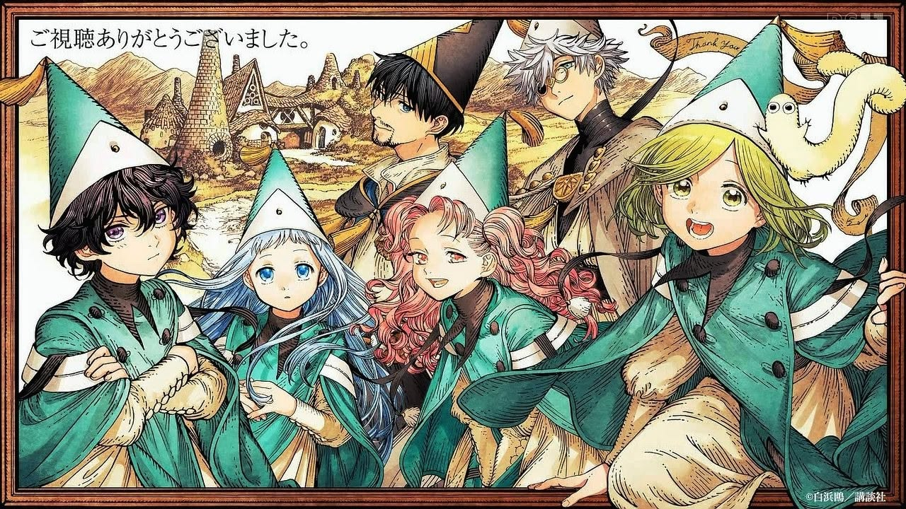

Bienvenido al Atelier

Witch Hat Atelier es una historia de fantasía ambientada en un mundo donde la magia parece estar reservada para aquellas personas que nacieron con la capacidad de utilizarla.
Coco es una joven fascinada por la magia desde pequeña. Su vida cambia cuando conoce a Qifrey y descubre que el verdadero funcionamiento de la magia es muy diferente de lo que siempre había imaginado.
A partir de ese momento, Coco comenzará su aprendizaje dentro del atelier mientras descubre los secretos y peligros que rodean al mundo de la magia.